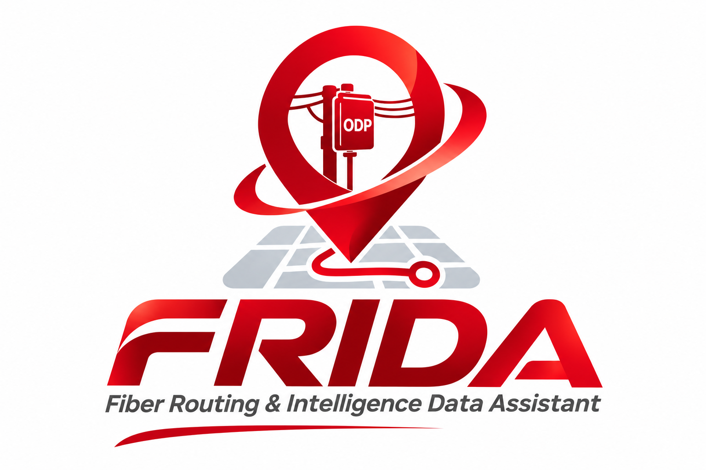

Lupa Password
Masukkan email akun FRIDA. Kami akan mengirim tautan untuk membuat password baru.
Buat Password Baru
Masukkan password baru untuk akun FRIDA Anda.
Registrasi Sales Force
Akun baru perlu persetujuan Manager sebelum dapat login dan mengakses peta. Tidak perlu konfirmasi email.
FRIDA v1.4.3 · Boundary & Marker Update
Profil Saya
Nama: —
Email: —
Role: —
Ganti Password
Untuk keamanan, masukkan password saat ini sebelum membuat password baru.
Ringkasan Okupansi ODPMenunggu lokasi pusat…
Total ODP—
Black—
Green—
Yellow—
Orange—
Red—
BlackGreenYellowOrangeRed
Pilih GPS atau titik manualRadius garis lurus · Rute pedestrian mengikuti jalur jalan kaki
ODP dengan koordinat tidak valid tidak ditampilkan. Cluster marker mengelompokkan ODP yang berdekatan; perbesar peta untuk melihat titik individual.
Manajemen Pengguna
Persetujuan akun Sales Force
Memuat akun menunggu persetujuan…
Daftar Sales Force
Memuat daftar pengguna…
Informasi hak akses
Menu ini hanya tersedia bagi Manager dan Super Admin. Pengaturan role dan status akun tetap dikendalikan oleh kebijakan database Supabase.